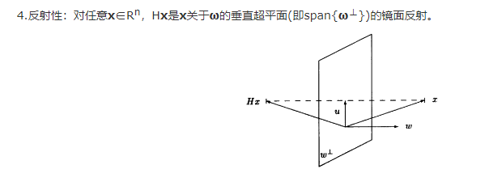

【矩阵论】Geometric Theory of Matrix(矩阵的几何理论)
Linear operator in Linear Space(线性空间上的线性算子)
Linear Space(线性空间):里面的元素对线性运算封闭。当里面的元素为矩阵时，也叫矩阵空间(Matrix Space)
零空间维数是0（只有0向量）
解空间:基础解系构成解空间的一组基
自然基:相互正交的，只有一位为1的向量
坐标变换(Coordinate transformation):
线性算子(linear operator)
就是一个线性映射（也可以用一个矩阵A来表示）
同构算子(isomorphism operator):一对一映射
$A^H$表示共轭转置，也就是把每个元素都取共轭值，再转置
相似矩阵
意义是A、B可以看成同一个线性变换在不同基下的矩阵
性质:
拥有相同的特征多项式,相同的特征值
相抵矩阵
D,C都是非奇异的
合同\相合矩阵
对角化
可对角化的充分必要条件是：A有n个线性无关的特征向量。也就是各特征值几何重复度=代数重复度
亏损矩阵:n阶矩阵的特征向量<n
C的求法：先求特征值，然后求出特征向量，然后按列摆在一起
正交化
Schmidt orthogonalization
1.$y’_1=x_1$作为第一个
2.$y’^2=x_2-\frac{(x_2,y’_1)}{(y’_1,y’_1)}y’_1$
3.$y’^3=x_3-\frac{(x_3,y’_2)}{(y’_2,y’_2)}y’_2-\frac{(x_3,y’_1)}{(y’_1,y’_1)}y’_1$
….
正交矩阵:
初等反射矩阵(Householder Transformation)

对称变换(Symmetric Transformation)
正定矩阵
特征值非负
充要条件
Hermitian Matrix
瑞利熵
A为Hermitian矩阵(n*n)
性质：最大值=矩阵最大特征值，最小值=矩阵最小特征值